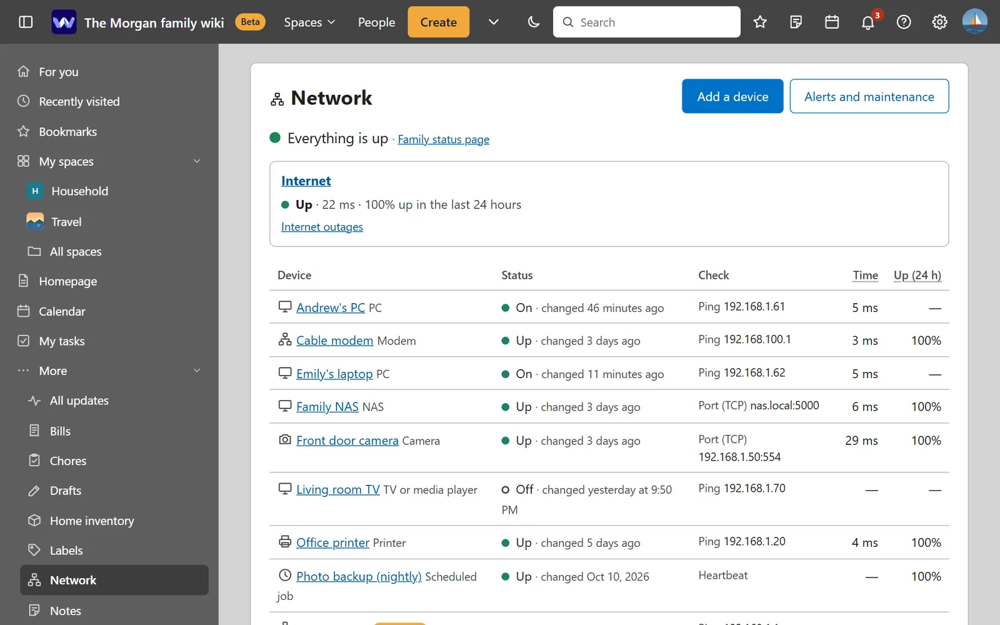
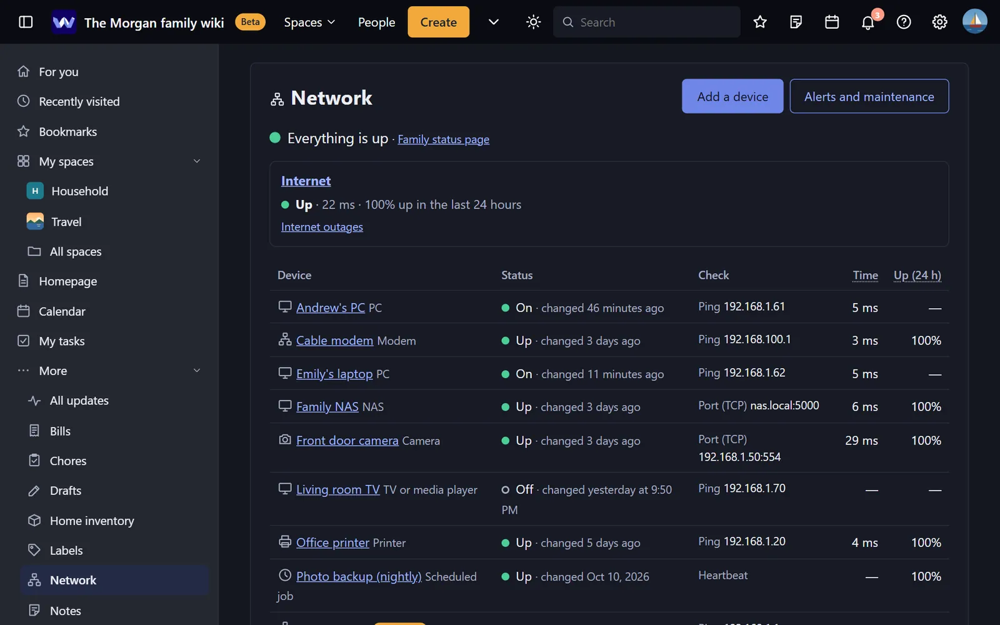
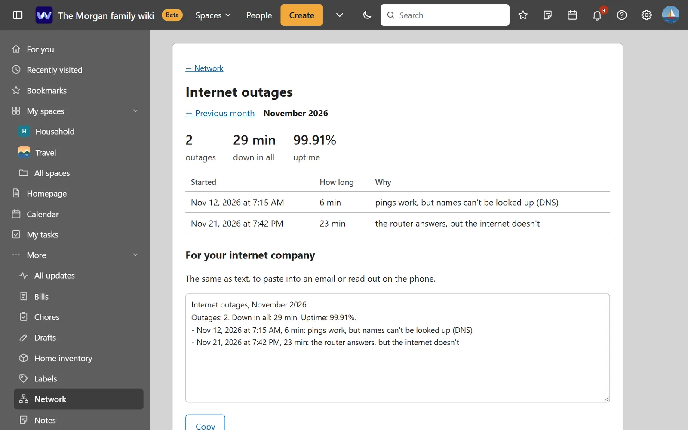
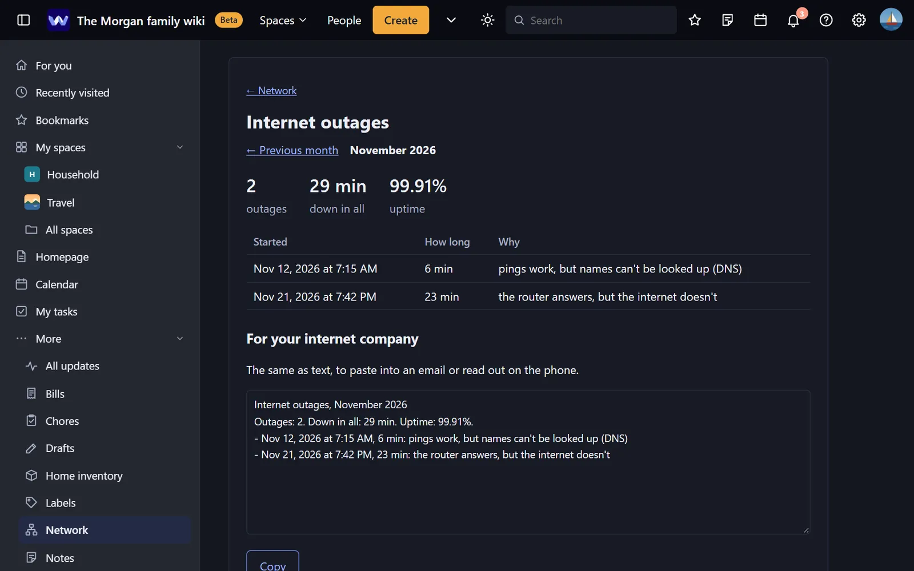
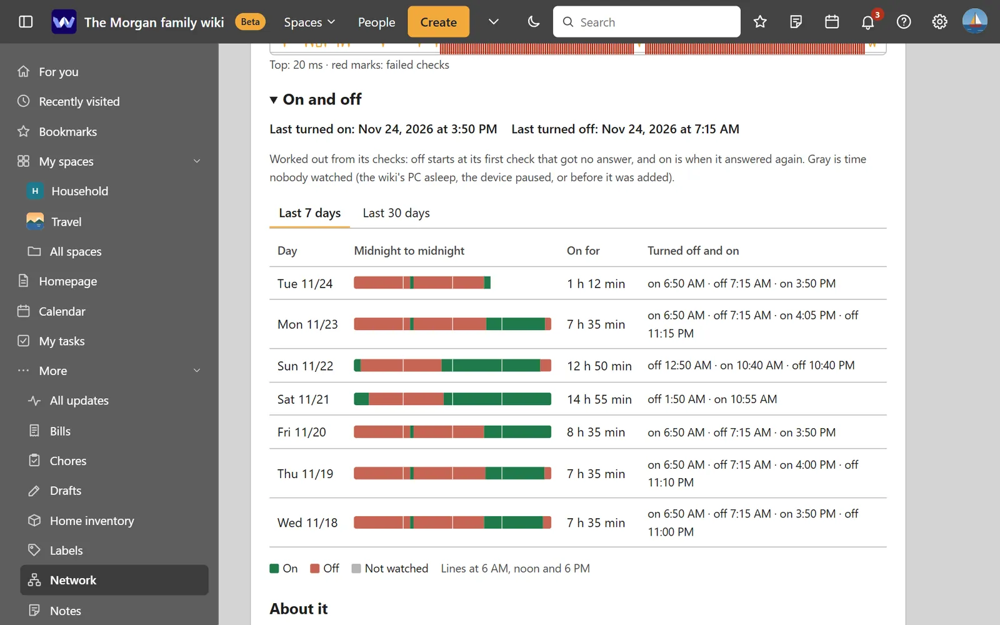
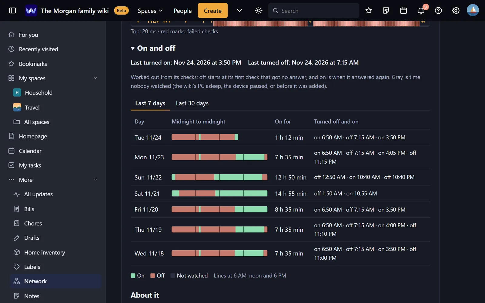

Every device at a glance
Add the router, the cable modem, the NAS, the printer, the cameras and the smart-home hub, and Network checks each one all the time, whether or not anyone is looking: by ping, a port (the NAS’s web page, a camera’s video), a web address (its answer, a word that should or shouldn’t be on the page, and when its certificate ends) or a DNS server, every 30 seconds to 15 minutes. Each gets a light, a graph of its response times over the last day, week or month, its uptime and its outages. Point at a column to see what it means. A device can link to a wiki page with its manual, or to the thing in your home inventory. Everyone in the wiki sees the names and lights; only admins see the addresses and make changes.
Is it the internet?
The built-in Internet check asks the router, then two sites on the internet, then a name lookup, so when it’s down it says what broke: the router doesn’t answer, the router answers but the internet doesn’t, or names can’t be looked up (DNS). Internet outages lists each month’s outages with how long they lasted and the month’s uptime, with the same as text to paste into an email or read out on the phone when you call the internet company.


When the kids’ PCs and the TV are on
Watch a device for Usage instead of problems: a kid’s PC, a game console, the TV. It shows On or Off, tells nobody and never turns the overall light red. Its On and off log says when it was last turned on and off, and draws the last 7 or 30 days as a bar for each day, with how long it was on and the times it was turned off and on: was the PC still on at midnight on a school night? Or watch the TV and see how much TV you watch every day.


Backups that check in
Some things can’t be checked from outside: a backup job, a script, a camera that uploads. Give each a heartbeat: its own link, which it opens when it’s done (Network shows the command to add to a Windows scheduled task, a NAS or a router). When no beat comes within its time, from 5 minutes to a week, or the job opens its link with /fail, it’s down and you hear about it.
Alerts that know when to be quiet
When a device goes down, and when it comes back, the bell tells the wiki’s admins, or everyone for a device you choose, with browser and Windows notifications if they’re turned on. Quiet hours hold the news until morning, except for devices marked Important. Maintenance windows, once or every week, keep a NAS’s Sunday updates from waking anyone. A device behind the router isn’t reported while the router itself is down, and a weekly summary sums it all up.
A status page for the family
Status is one big, plain line for everyone: “Everything is working”, or “The internet is down” with what to try, the devices you leave on it (names and lights, never addresses), a message from you, and the internet’s last outage. It keeps itself up to date. An admin can open it to anyone on the home network without signing in; from outside the home it always needs someone signed in.
In the tray, on your homepage, to your AI agent
The tray icon’s menu has a Network line with a green, yellow or red dot (“Network: Router is down”) that opens Network. A Network status section puts the light on your homepage, and the Home network template starts a homepage around it. An AI agent connected with your key can read Network, answer “what’s down?” or write up the month’s internet outages, and an admin’s agent can propose adding or changing a device, for the admin to apply.
See it for yourself
Download the free beta and open the demo wiki from setup or the tray icon: it’s this wiki, and nothing you do there is kept. See pricing for after the beta, or go back to all the features.